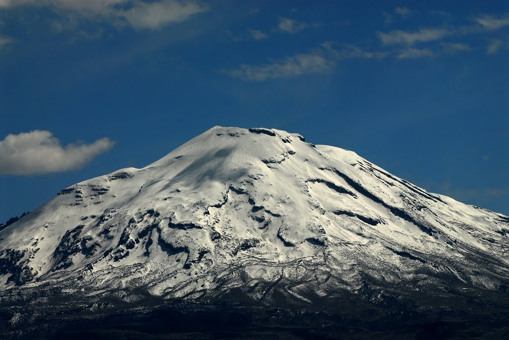
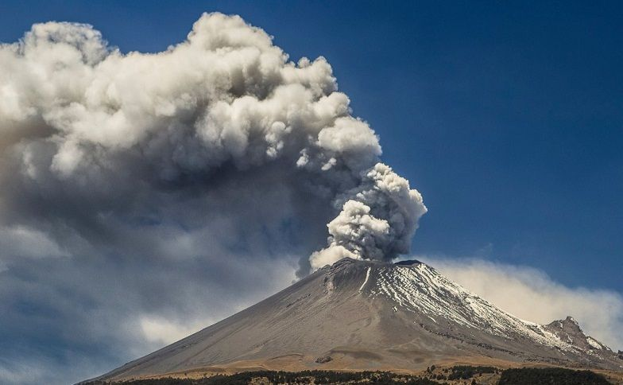
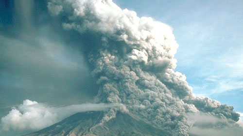
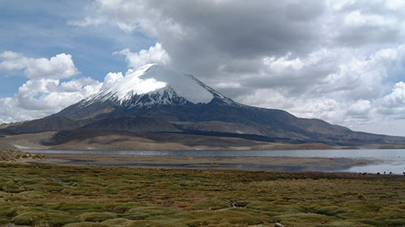

В данном разделе находятся все вулканы этой страны на нашем сайте.
Вулкан Сабанкая в Перу

«Огненный язык» – так переводится название самого активного стратовулкана в Перу «Сабанкая».
Вулкан расположился всего в 100 км от второго по величине города в южной части Перу – Арекипа. Высота
вулкана достигает 5976 м. Вершина вулкана Сабанкая находится в середине вулканической цепи, растянувшейся
с севера на юг на 20-километровое расстояние в горной системе Анд. Помимо Сабанкая в этой цепи находятся
вулканы: спящий Ampato (на юге) и потухший Wallqa Wallqa(на севере).
На вершине вулкана Сабанкая расположены несколько крупных ледников, занимающих площадь 3,5 кв. км, они
спускаются по флангам вулкана на 5400 м.
На вершине вулкана Сабанкая расположены несколько крупных ледников, занимающих площадь 3,5 кв. км, они
спускаются по флангам вулкана на 5400 м.
Затем вулкан успокоился и более 200 лет находился в спячке. В 1986 году стало увеличиваться его тепловое
излучение, что было зафиксировано спутниками, в декабре 1986 года вулкан активизировался. На протяжении
двух лет он продолжал извергаться. Из-за такого длительного извержения в его кратере произошло образование
большого лавового купола.

Очередной взрыв вулкана произошел в мае 1990 года, с этого времени начался его самый продолжительный
период активности. Он продолжался более восьми лет. За этот период вулканом было выброшено свыше 25
миллионов кубометров ла
В 1994 году наступил самый разгар деятельности вулкана, каждые два часа вулкан извергал пепловые колонны.
Как отмечали вулканологи, за восемь лет активной деятельности вулкан подрос до 6000 м. Но данный факт не
проверялся больше, так как пересмотр ранее опубликованных топографических карт не производился
При извержении в 1988 году в окрестностях вулкана произошла гибель домашнего скота. Либо это было
отравление вулканическими газами, либо употребление растительности, которая была заражена химическими
веществами. Кстати, при активизации вулкана вырабатывается токсичное вещество – сера. Поэтому очень
заметны желтые отложения возле кратера.
В 2014 году вулкан вновь сильно активизировался. За вулканом постоянно велось наблюдение. Геологи из
института Геофизики Перу побывали на вулкане, ими проводились исследования. Сейчас его контролируют 18
станций наблюдения.Вулкан является наиболее опасным в стране, поэтому, когда он просыпается, местные
жители начинают сильно беспокоиться, ведь в долинах продолжают жить тысячи людей. К тому же он потенциально
опасен для города Арекипа, который относительно недалеко находится.
В августе 2015 года вновь была организована исследователями-вулканологами экспедиция на вулкан, который
стал подавать признаки активности, в боковом кратере возросла температура до 400 °C и продолжала расти.
Этот кратер когда-то был вершиной горы, сейчас он находится в 500 м от основного. Специалистами были
сделаны снимки и проведены изменения рельефа кратера. Состояние вулкана Сабанкая тревожит не только
специалистов-вулканологов, а также власти Перу, которые при малейшей вулканической угрозе проводят
необходимые мероприятия, самым важным из которых является эвакуация местных жителей.
Вулкан Уайнапутина в центральной зоне перуанских Анд

Этот «юный вулкан», а именно так переводится с языка южноамериканского индейского народа кечуа название
вулкана Уайнапутина, на самом деле образовался сотни тысяч лет назад.
Вулкан расположен в Перу, в области Мокегуа (южная часть Перу) и является частью Центральной вулканической
зоны Анд. Высота вулкана составляет 4800 м. Его вершина ничего особенного собой не представляет, скорее
похожа не на гору, а на холм.
А вот кратер вулкана вызывает больший интерес, имеет форму подковы, ширина его 2,5 м. В кратере находятся
три 100-метровых глубоких конуса, они образовались во время извержения вулкана в 1600 году. Это
единственное исторически зафиксированное извержение вулкана. Вулканический взрыв оказался самым мощным за
историю Южной Америки
Вулкан относят к типу стратовулканов, но характерную коническую форму для этого типа вулканов он не успел
восстановить после своего мощнейшего взрыва. Свидетелем катаклизма оказался монах Антонио Васкес де
Эспиноса, он описал его в книге «Компендиум и описании Западных Индий». Благодаря этому манускрипту сегодня
известны подробности этого страшного вулканического извержения. На протяжении веков местное население
считало вулкан олицетворением злых духов, поэтому люди старались задобрить монстра жертвоприношениями.

Так, всего за несколько дней до извержения местные жители услышали шум около вулкана и увидели дым из его
кратера. Они начали готовить жертвоприношения: домашний скот, девушек, цветы. Когда началась церемония
жертвоприношения, вулкан извергнул столб пепла, началась подземные толчки, а 19 февраля вулкан яростно
мощным взрывом и выбросил в атмосферу огромный столб пепла.
Извержение повторилось через месяц. Пепел распространился на расстояние до 500 км от кратера, покрыв
территорию слоем пепла в 30 см. Лавовые потоки, преодолевая огромное расстояние, дошли до Тихого океана,
уничтожив на своем пути десятки деревень. Был нанесен колоссальный ущерб сельскому хозяйству. Таким образом,
потребовалось 150 лет для полного восстановления сельскохозяйственной экономики в этом регионе.
Количество выброшенной серы намного превышало выбросы при извержении вулкана Кракатау в1883 году. От
выбросов пепла и землетрясений сильно пострадали города Арекипа и Мокегуа, Жертвами извержения стали более
1500 человек. По современной семибальной шкале вулканических извержений это катастрофическое извержение
оценено в 6 баллов.
Кроме того, извержение вулкана серьезно повлияло не только на Южную Америку. Его отголоски коснулись
всего мира. Считается, что накопленный в атмосфере пепел стал причиной серьезного изменения климата,
наступил так называемый малый ледниковый период.
Следствием этого самыми холодными за 600 лет стали зимы в 1601 и 1602 годах, лето также было нетеплым.
Так, в августе 1601 года Москву засыпало снегом, замерзли реки, что привело к великому голоду. По мнению
многих историков, голод стал причиной начала Смутного времени в России. Последствия извержений отразились
на некоторой части Европы и Азии. Во Франции из-за холода погиб весь урожай винограда. В Китае с большим
опозданием зацвели персиковые деревья. Японское озеро Сува покрылось ледяными хребтами больших размеров.
Сейчас вулкан Уайнапутина не представляет опасности, но кто знает, когда он вдруг проснется и как себя
проявит. Сейчас это одна из самых интересных и, наверное, потенциально опасных природных достопримечательностей
Перу.


 Вулкан Сабанкая на Гугл карте
Вулкан Сабанкая на Гугл карте